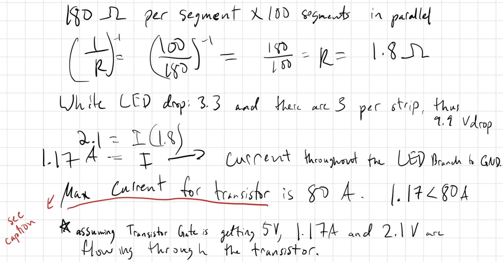
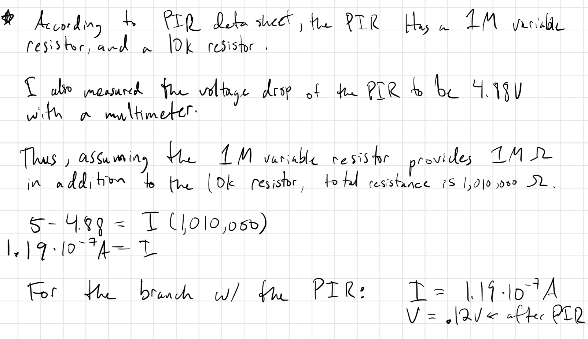

The Schematic & Calculations:



This is my written out schematic. The PIR and LED Strip do not need resistors. The PIR and LED Strip are powered by different power supplies. Voltages and currents after the PIR and LED Strip are given. Also, according to the
data sheet, at room temperature and 10V, max continuous current is 37.2 A. Either way, the current running through the transistor (1.7A) is significantly less than 37.2A.
Firmware
//loading in library for PIR
#include "PIR.h"
//making PIR object P
PIR P;
//make brightness int
int brightness = 0;
//make checker int variable for PIR
int lastVal;
//make checker int var for PIR
int currentVal;
//make brightness level array for PIR
int blvl[] = {25, 150, 255};
//setup code runs once upon startup
void setup() {
//adding PIR to pin 10
P.add(10);
//set pin 10 to output mode
pinMode(9, OUTPUT);
}
//loop runs repeatedly
void loop() {
//checks if PIR detects movement
currentVal = P.read();
//check to make sure light only turns on per each time the PIR detects movement, not necessarily as long as the PIR reads "HIGH/1"
if(currentVal == 1 && currentVal != lastVal){
//makes pin 9 output "brightness" amount of voltage. This goes to the transistor, which makes the LEDs
//proportionally bright
analogWrite(9, blvl[brightness]);
//brightness int increases to cycle through the array blvl
brightness++;
//light stays on for 5000ms
delay(5000);
//turns light off after delay
analogWrite(9, 0);
//checks if brightness is greater than max of blvl array
if(brightness >2){
//resets to avoid error
brightness = 0;
}
}
//makes currentVal lastVal to ensure if statement works
lastVal = currentVal;
}
This is my commented-out firmware that explains how the circuit works.
Additional Questions
1: What is the absolute maximum amount of current between pins 2 and 3?
According to the datasheet of the component,the maximum body diode forward current is 80A, however, its at room temperature and 10V, max continuous current is 37.2 A under normal operating conditions.
2: Draw a schematic for a circuit with using at least your arduino, a DC motor, a flyback diode, and capacitors between power and ground. Find parts with datasheets you could use for each of these schematic components.

Datasheets:
1N4001 - https://www.vishay.com/docs/88503/1n4001.pdf
TFK280SC-21138-45 - https://cdn.sparkfun.com/datasheets/Robotics/RP6%20motor%20TFK280SC-21138-45.pdf
EEU-FR1H100B - https://industrial.panasonic.com/cdbs/www-data/pdf/RDF0000/ABA0000C1259.pdf
3: Draw a schematic using at least your arduino, this chip, and two motors. Write (pseudo) code that shows how you would move the motors both forward, both back, then one forward one back, and one back then forward.

This is the schematic for question 3. Pins 4, 5, 12, and 13 of the L293D chip are connected to ground.
setup(){
pinMode(1,2,4, and 5, OUTPUT);
}
loop{
//both forward:
digitalWrite(2 and 4, HIGH);
digitalWrite(1 and 5, LOW);
delay(3000);
//both backward:
digitalWrite(2 and 4, LOW);
digitalWrite(1 and 5, HIGH);
delay(3000);
//alternate directions
digitalWrite(2, HIGH);
digitalWrite(1, LOW);
digitalWrite(4, LOW);
digitalWrite(5, HIGH);
delay(3000);
//alternate directions again
digitalWrite(2, LOW);
digitalWrite(1, HIGH);
digitalWrite(4, HIGH);
digitalWrite(5, LOW);
delay(3000);
}
This is the pseudocode for Q3.